Hero Teams: Early Reforged Duo to 7-Hero Mesmerway
Customizable Heroes are the backbone of solo PvE in Guild Wars. Every Hero pulls directly from skills unlocked anywhere on your account. Guild Wars Reforged's addition of Devona (Pre-Searing) and Ghost of Althea (Post-Searing) gives you three native Mesmer Heroes alongside Gwen and Norgu, eliminating old mercenary bottlenecks.
Stage 1 · Reforged Ascalon Duo (Levels 6 to 12) 0/0 (0%)
Before hitting Lion's Arch, Devona (unlocked in Forsaken Tunnels under  Reforged Mode) and Ghost of Althea (unlocked in Tunnels of the Forsaken) fill two party slots alongside Prophecies Henchmen. Set Devona to Guard (blue shield) so she steps onto pulled Charr first without suiciding, and set Althea to Guard so she interrupts enemy casters with Cry of Frustration and Power Drain.
Reforged Mode) and Ghost of Althea (unlocked in Tunnels of the Forsaken) fill two party slots alongside Prophecies Henchmen. Set Devona to Guard (blue shield) so she steps onto pulled Charr first without suiciding, and set Althea to Guard so she interrupts enemy casters with Cry of Frustration and Power Drain.
-
Unlock
 Devona (Pre-Searing / Lion's Arch): Defeat Maz Scourgeheart in Forsaken Tunnels during The Scourge Beneath (or grab The Hero From Ascalon later at Lion's Arch). Run Sword + Shield (
Devona (Pre-Searing / Lion's Arch): Defeat Maz Scourgeheart in Forsaken Tunnels during The Scourge Beneath (or grab The Hero From Ascalon later at Lion's Arch). Run Sword + Shield ( Sever Artery,
Sever Artery,  Gash, Healing Signet, Watch Yourself) or Hammer Knockdown (
Gash, Healing Signet, Watch Yourself) or Hammer Knockdown ( Crude Swing + Heavy Blow).
Crude Swing + Heavy Blow).
-
Unlock
 Ghost of Althea (Post-Searing Breach): Finish Althea's Ashes → Elegy for Those Left Behind → The Cost of Survival → The Dreamer and the Zealot. Equip
Ghost of Althea (Post-Searing Breach): Finish Althea's Ashes → Elegy for Those Left Behind → The Cost of Survival → The Dreamer and the Zealot. Equip  Cry of Frustration,
Cry of Frustration,  Backfire,
Backfire,  Shatter Hex, and
Shatter Hex, and 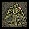
Resurrection Signet.
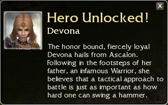
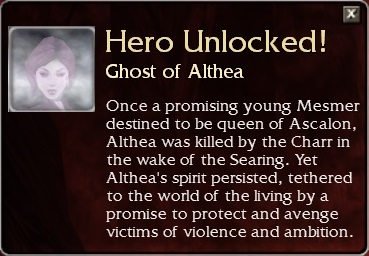
Stage 2 · 7-Hero Beginner Team (Zero Elites Required)
Assembled at Level 10 to 12 immediately after reaching Lion's Arch, Kaineng Center, Boreal Station / Eye of the North, and Kamadan / Consulate Docks. Uses strictly regular Skill Trainer and Hero Skill Trainer skills (only 11 total skills unlocked across four trainers plus default starter skills) and steamrolls every Normal Mode campaign cleanly.
Exact Trainer Shopping List (Do This Right After Unlocking Consulate Docks)
| Skill Trainer | Outpost & Campaign | Exact Skills to Unlock on Your Account | Status |
|---|---|---|---|
| Michiko | Kaineng Center (Factions) |
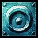 Signet of Rejuvenation, |
|
| Pikin (Hero Trainer) | Kamadan (Nightfall) | ||
| Shiloh (Hero Trainer) | Sunspear Great Hall (Nightfall) | 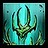 Animate Shambling Horror (1 Hero Skill Point) |
|
| Medando | Yohlon Haven (Nightfall) |
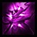 Spiritual Pain |
|
| Micah Fergson | Eye of the North (EotN) |
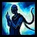 Patient Spirit,Base-trilogy substitute without EotN: buy Hex Removal & Orison of Healing at Consulate Docks / Kaineng Center until Eye of the North is owned. |
7-Hero Beginner Team Starting Roster & Loadout Codes
-
Hero 1 – Olias (N/Me Minion Bomber): Animate Bone Minions, Animate Shambling Horror, Unnatural Signet, Death Nova, Cry of Frustration, Signet of Lost Souls, Masochism, Resurrection Signet.OAVTI0CbQqK4oy0BNIHoqaLUAA
-
Heroes 2 & 3 – Vekk & Acolyte Sousuke (E/Me Domination Midline): Spiritual Pain, Unnatural Signet, Mistrust, Cry of Frustration, Power Drain, Drain Enchantment, Empathy, Resurrection Signet.OgVTI4xysRAgTNdTvcQGgIoBA
-
Hero 4 – Gwen or Ghost of Althea (Me/Mo Domination): Shatter Hex, Spiritual Pain, Unnatural Signet, Mistrust, Cry of Frustration, Power Drain, Drain Enchantment, Resurrect.OQNTAUBPwZIgTNdTvcQGgIETA
-
Hero 5 – Ghost of Althea (2nd Me/Mo) or Melonni (D/Me Base-Trilogy Slot): Use Althea on the same
OQNTAUBPwZIgTNdTvcQGgIETADomination bar (or Melonni D/Me onOgWjIwDLrNDBcqpb6lDyAEBNAif substituting without EotN Gwen).OgWjIwDLrNDBcqpb6lDyAEBNA -
Heroes 6 & 7 – Ogden Stonehealer & Dunkoro / Tahlkora (Mo/Me Prot-Healers): Signet of Rejuvenation, Patient Spirit, Protective Spirit, Aegis, Shield of Absorption, Cure Hex, Mend Ailment (Hero 6) / Orison of Healing (Hero 7), Power Drain.OwUUMwG/OIS3NNg1DBE3VVETfZAAOwUUMwG/OIS3NNg1DBE3VZETfZAA
Stage 3 · Endgame 7-Hero Offensive Mesmerway
The gold-standard all-purpose PvE composition capable of sweeping Hard Mode missions, Vanquishes, Dungeons, and Elite Areas. Dual Restoration keeps your team rock-solid while Ghost of Althea gives every Reforged Mode account three native Mesmers alongside Gwen and Norgu. Once experienced, swapping Master of Whispers for a fourth Illusion Mesmer (Ineptitude, OQBTA2APM6FABkDKPjEgIIDAAA) accelerates clears even faster.
1. Gwen (Me/any Panic Shutdown Mesmer)
Attributes: Domination Magic 12+1+3 (16), Fast Casting 11+2 (13), Inspiration Magic 6+1 (7). Gear: Superior Domination, Minor Fast Casting, Minor Inspiration, 4x Prodigy's Insignia, 40/40 Domination set.
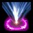
Power Drain2 & 3. Ghost of Althea & Norgu (Me/Mo or Me/Rt Energy Surge Spikers)
Attributes: Domination 12+1+3 (16), Fast Casting 11+2 (13), Inspiration 6 (or 2 Healing/Restoration for Resurrection Chant/Flesh of My Flesh). Equip casters with 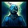 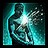
4. Master of Whispers (N/P Bone Fiend MM & Movement Shouts)
Attributes: Death Magic 12+1+3 (16), Soul Reaping 9+2 (11), Command 9. Gear: Minion Master's Insignias + 40/40 Death Magic set. Runs 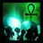
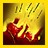
"Incoming!"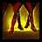
"Stand Your Ground!"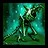
Animate Bone Fiend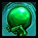
Putrid Bile5. Olias (N/Rt Blood is Power Battery & Restoration Healer)
Attributes: Restoration Magic 12, Blood Magic 9+1+3 (13), Soul Reaping 9+2 (11). Fuels your three Mesmers' huge energy demand nonstop via  Blood is Power while pumping huge single-target and party heals.
Blood is Power while pumping huge single-target and party heals.
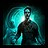
Spirit Transfer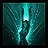
Mend Body and Soul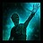
Spirit Light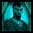
Protective Was Kaolai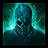
Recuperation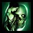
Blood Bond6. Razah (Rt/any Signet of Spirits Secondary Healer)
Attributes: Channeling Magic 12+1+3 (16), Restoration Magic 12, Spawning Power 3+1 (4). Brings armor-ignoring spirit pressure, 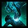 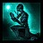 Splinter Weapon for melee).
Splinter Weapon for melee).
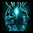
Spirit Siphon7. Xandra (Rt/Mo Soul Twisting Protection Engine)
Attributes: Communing 12+1+3 (16), Spawning Power 12+3 (15). Never micro-managed once engaged: casts 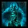 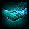 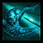 Soul Twisting and drops three overlapping protection spirits (
Soul Twisting and drops three overlapping protection spirits (
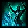
Boon of Creation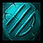
Signet of CreationElite Skill Boss Capture Table (Mesmerway & Core Team)
Set your own Primary or Secondary Profession to match the Elite skill you want to capture, put  Signet of Capture on your bar, kill the named boss below, and trigger the Signet beside the boss's corpse before it fades.
Signet of Capture on your bar, kill the named boss below, and trigger the Signet beside the boss's corpse before it fades.
| Elite Skill | Prof. | Easiest Boss & Location | Alternate Capture Spot | Captured |
|---|---|---|---|---|
| Mesmer | Varny the Zealot (Tunnels of the Forsaken Floor 3, Reforged Mode) | Mursaat Mesmer (Ice Floe) or Balasi the Arcane (Iron Mines of Moladune) | ||
| Panic | Mesmer | Moles Quibus (Hell's Precipice, Prophecies Finale) | Mallus Funo (Dragon's Gullet during The Titan Source) | |
| Necromancer | Chan the Dragon's Blood (The Undercity, Factions) | Overseer Haubeh (Kodonur Crossroads) or Cry Darkday (Snake Dance) | ||
| Ritualist | Wagg Spiritspeak (Ferndale, Factions) | Reisen the Phoenix (during Raid on Kaineng Center) | Optional endgame | |
| Ritualist | Ritualist's Construct (Sunjiang District Mission or Morostav Trail) | Defiant Ancient Sseer (Raisu Palace explorable) | Unlock w/ Factions | |
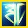 Word of Healing |
Monk | Ziinfaun Lifeforce (Xaquang Skyway, Factions) | Dassk Arossyss (Dunes of Despair) or Flannuss Broadwing (Arbor Bay) | Beginner Team Final |